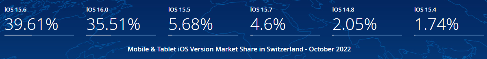
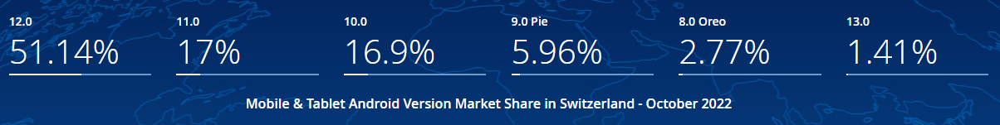
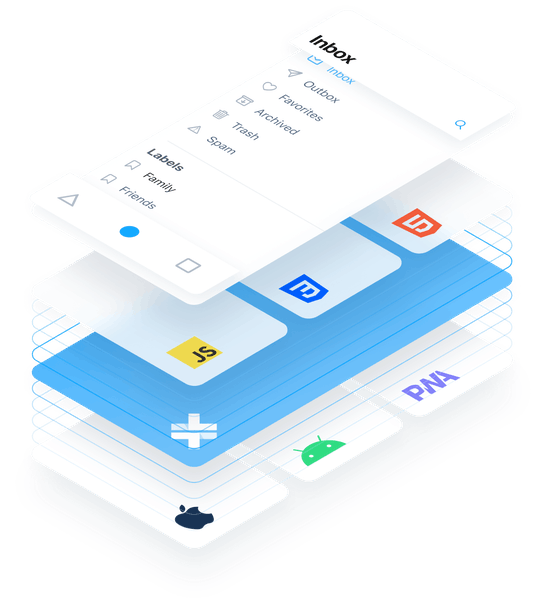
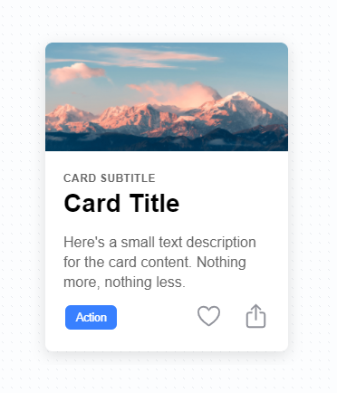
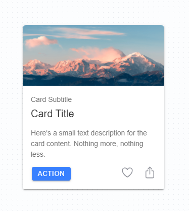
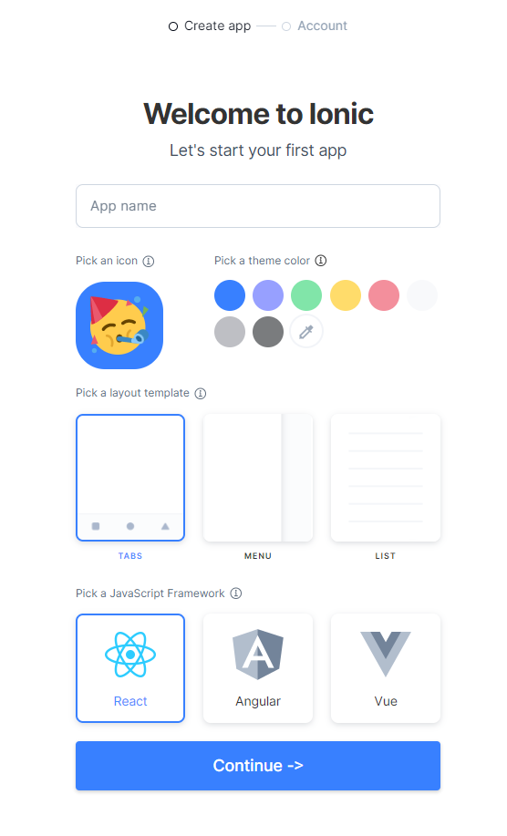
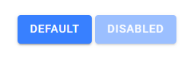
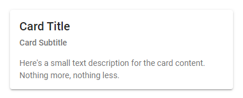
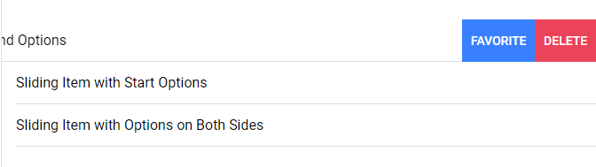

# Introduction Learn about [Ionic][ionic], an open source framework to build hybrid mobile applications based on [Capacitor][capacitor], and [Angular][angular]. **You will need** - [Node.js][node] 16+ - [Edge][edge] or [Google Chrome][chrome] (recommended, any browser with developer tools will do) --- ## Which OS (and version) should your app support? .breadcrumbs[<a href="#1">Introduction</a>] **iOS version share**  [source](https://gs.statcounter.com/os-version-market-share/ios/mobile-tablet/switzerland) **Android version share**  [source](https://gs.statcounter.com/os-version-market-share/android/mobile-tablet/switzerland) --- ## Hybrid mobile applications .breadcrumbs[<a href="#1">Introduction</a>] .grid-50[ Write your app with web technologies and languages (HTML, CSS and JavaScript), and embed it into a **native application** thanks to a native bridge (like Capacitor, more on that later). Since you are writing a **web app**, you can access **native web APIs** like the [Geolocation API][geolocation-api]. But since you are using a native wrapper, you can also access **device-only hardware/features** like the **fingerprint scanner** or the **accelerometer**, and you can do it **through JavaScript**, though with the help of dedicated plugins. ] .grid-50[  ] --- ### Hybrid VS Native .breadcrumbs[<a href="#1">Introduction</a> > <a href="#3">Hybrid mobile applications</a>] There's a lot of talk around mobile application development and wether or not you should go the hybdrid way, or stick to the native development. _[Read](https://cdn2.hubspot.net/hubfs/3776657/Ionic%20eBook%20-%20Hybrid%20vs%20Native.pdf?utm_source=hs_automation&utm_medium=email&utm_content=60041551&_hsenc=p2ANqtz-8mI1bbQO8sbWgiIUWfi1RRmnzzqBAJm5p6pHYTW0-t1e6UMRbQAjFTlW77qlLCZkxParmZq0DfrkbiW9qEuTEpmKWFDk_Ns7RyfGVeXtMqnp8VxMM&_hsmi=60041551) [More](https://medium.com/@zwacky/hybrid-apps-are-slow-f3367d22e868) on the subject_ .grid-50[ <h4>Native Development</h4> **Pros** - Highest performances - No dependencies to third-parties (access all of the features offered by the native SDK) **Cons** - One codebase/release cycle/team per platform - Requires more resources, time and knowledge ] .grid-50[ <h4>Hybrid Development</h4> **Pros** - One codebase for all platforms (mobile and desktop alike) - Widely used and known technologies **Cons** - (Little) Less performant than native apps - Access to native device capabilities limited by plugins ] --- ### Capacitor .breadcrumbs[<a href="#1">Introduction</a> > <a href="#3">Hybrid mobile applications</a>] <p class='center'><img src='images/capacitor.png' class='w35' style="margin-bottom: 25px" /></p> > Capacitor is an open source native runtime for building Web Native apps. > Create cross-platform iOS, Android, and Progressive Web Apps with JavaScript, HTML, and CSS. --- #### Other options .breadcrumbs[<a href="#1">Introduction</a> > <a href="#3">Hybrid mobile applications</a> > <a href="#5">Capacitor</a>] Capacitor is not the only system that allows developing hybrid (or hybrid-like) mobile applications. Here's a list of other technologies and why they were not chosen for this course: - [Cordova](https://cordova.apache.org/) - The Ionic team developped Capacitor to replace Cordova - [Microsoft Xamarin](https://dotnet.microsoft.com/apps/xamarin) - Uses .NET and C# for development - [Google Flutter](https://flutter.dev/) - Uses [Dart](https://dart.dev/) under the hood and is relativaly new - [Facebook React Native](https://facebook.github.io/react-native/) - Can only be used with React - And [others](https://medium.com/datadriveninvestor/hybrid-mobile-app-development-frameworks-for-2019-ac56b1e65f29)... --- ### What about Ionic? .breadcrumbs[<a href="#1">Introduction</a> > <a href="#3">Hybrid mobile applications</a>] .grid-35[ <img src='images/ionic.png' class='w100' style='margin-top:2em;' /> ] .grid-65[ > "Ionic Framework is the free, open source **mobile UI toolkit** for developing high-quality cross-platform apps for native iOS, Android, and the web—all from a single codebase." ] .container[ Ionic is actually two things: - A set of development tools (like the Ionic CLI) to help you create, manage, build and deploy your hybrid mobile application - A set of **pre-made components** for each of the main JavaScript frameworks (**Angular, React, Vue, ...**) <div class='center' style="display: flex; align-items: center; justify-content: space-around;"> <img src='images/capacitor.png' height="80"/> <img src='images/angular.png' height="100"/> <img src='images/react.png' height="100"/> <img src='images/vue-logo.png' height="80"/> </div> > Please note that we will be using **Angular** as the underlying framework in this course. ] --- #### What can I do with Ionic? .breadcrumbs[<a href="#1">Introduction</a> > <a href="#3">Hybrid mobile applications</a> > <a href="#7">What about Ionic?</a>] Ionic lets you build web apps that **look and behave (almost) like native apps** with HTML, CSS and JavaScript or a supported framework. The same application can be deployed on the web (as a PWA or not), Android or iOS, and will adopt the plateform's visual look and feel .grid-50[ _A card component displayed on an iOS platform_  ] .grid-50[ _The same card displayed on an Android platform_  ] --- class: center, middle, image-header ## Demo .breadcrumbs[<a href="#1">Introduction</a>] <p class='center'></p> --- ### Install Ionic .breadcrumbs[<a href="#1">Introduction</a> > <a href="#9">Demo</a>] Ionic provides you a **CLI tool** that you should install globally with the following command: ```bash $> npm install -g @ionic/cli ``` You're now ready to use Ionic. Let's generate an app called `ionic-tabs-demo` with the `tabs` starter template, using `Angular` as the underlying framework: ```bash $> cd /path/to/projects $> ionic start ionic-tabs-demo tabs --type=angular [ --- All bunch of stuff going on... Just wait --- ] Your Ionic app is ready! Follow these next steps: *- Go to your new project: cd ./ionic-tabs-demo *- Run ionic serve within the app directory to see your app in the browser - Run ionic capacitor add to add a native iOS or Android project using Capacitor - Generate your app icon and splash screens using cordova-res --skip-config --copy - Explore the Ionic docs for components, tutorials, and more: https://ion.link/docs - Building an enterprise app? Ionic has Enterprise Support and Features: https://ion.link/enterprise-edition ``` > Follow the first two infos to see your app in your browser. --- ### Starter templates .breadcrumbs[<a href="#1">Introduction</a> > <a href="#9">Demo</a>] There are other templates than `tabs`. For example, this will generate an application with a sliding side menu: ```bash $> cd /path/to/projects $> ionic start ionic-sidemenu-demo sidemenu ``` You can also start with a much simpler template. This will generate an app with just one page and a title, then it's up to you to define your basic layout: ```bash $> cd /path/to/projects $> ionic start ionic-blank-demo blank ``` You will find many Ionic app templates shared by the community in the [Ionic market][ionic-market]. --- ### App Creation Wizard .breadcrumbs[<a href="#1">Introduction</a> > <a href="#9">Demo</a>] .grid-50[ If you prefer, you can simply type in `ionic start`, and agree to use the app creation wizard when prompted by the CLI: ```bash $> ionic start *? Use the app creation wizard? (Y/n) ``` In which case your browser will open on a configuration page where you can define a bunch of things about yout app. > Not that using this creation method will **require** you to have an Ionic account or create one. ] .grid-50[  ] --- class: center, middle ## Basics of Ionic .breadcrumbs[<a href="#1">Introduction</a>] --- ### Components .breadcrumbs[<a href="#1">Introduction</a> > <a href="#13">Basics of Ionic</a>] Ionic has many [UI components][ionic-components] you can use out of the box: .grid-65[ ```html <`ion-button`>Default</`ion-button`> <ion-button `[disabled]="true"`> Disabled </ion-button> ``` ] .grid-35[  ] .container[ .grid-65[ ```html <`ion-card`> <`ion-card-header`> <`ion-card-title`>Title</`ion-card-title`> <`ion-card-subtitle`>Sub</`ion-card-subtitle`> </`ion-card-header`> <`ion-card-content`> Here's a small text description for the card content. Nothing more, nothing less. </`ion-card-content`> </`ion-card`> ``` ] .grid-35[  ] ] .container[ .grid-65[ ```html <`ion-range`> <`ion-icon` slot="start" name="snow-outline"></`ion-icon`> <`ion-icon` slot="end" name="sunny-outline"></`ion-icon`> </`ion-range`> ``` ] .grid-35[ ] ] --- ### Component functionality .breadcrumbs[<a href="#1">Introduction</a> > <a href="#13">Basics of Ionic</a>] Many of these components are actually **complex components**. They not only look pretty, but they also bring **functionality** ; for example, the [`ion-item-sliding`][ionic-sliding-list] component enables you to slide in controls: ```html <ion-list> <ion-item-sliding> <ion-item> <ion-label>Sliding Item with End Options</ion-label> </ion-item> <ion-item-options> <ion-item-option>Favorite</ion-item-option> <ion-item-option color="danger">Delete</ion-item-option> </ion-item-options> </ion-item-sliding> <!-- ... --> </ion-list> ``` <p class="center">  </p> --- ## Running apps on your mobile device .breadcrumbs[<a href="#1">Introduction</a>] Even if Ionic allows you to develop and run your app **almost entirely on a browser**, the final goal should be to **build your app** and **run it on a actual mobile device**. How this can be achieved depends heavily on which mobile device and computer you actually have... - Want to test your app on **an iOS device**? You **must have a Mac** for that... - Want to test your app on **an Android device**? Any OS will do Whatever your setup, the Ionic documentation has dedicated walkthrough to set up your environment. - [iOS Development][ionic-ios-dev] - [Android Development][ionic-android-dev] --- ## Resources .breadcrumbs[<a href="#1">Introduction</a>] **Documentation** - [Capacitor requirements][capacitor-requirements] - [Ionic][ionic-docs] - [Components][ionic-components] - [API Documentation][ionic-api-docs] [adoptopenjdk]: https://adoptopenjdk.net/index.html [angular]: https://angular.io [angular-components]: https://angular.io/guide/architecture#components [capacitor]: https://capacitorjs.com/ [chrome]: https://www.google.com/chrome/ [configure-cli-tools]: https://ionicframework.com/docs/installation/android#configuring-command-line-tools [cordova]: https://cordova.apache.org [capacitor-requirements]: https://capacitorjs.com/docs/getting-started/environment-setup [edge]: https://www.microsoft.com/en-us/edge [geolocation-api]: https://developer.mozilla.org/en-US/docs/Web/API/Geolocation/Using_geolocation [ionic]: http://ionicframework.com [ionic-api-docs]: https://ionicframework.com/docs/api/ [ionic-components]: https://ionicframework.com/docs/components/ [ionic-dev-app]: https://ionicframework.com/docs/appflow/devapp/ [ionic-docs]: https://ionicframework.com/docs/ [ionic-market]: https://market.ionicframework.com/ [ionic-sliding-list]: https://ionicframework.com/docs/api/item-sliding [node]: https://nodejs.org/en/ [ionic-ios-dev]: https://ionicframework.com/docs/developing/ios [ionic-android-dev]: https://ionicframework.com/docs/developing/android